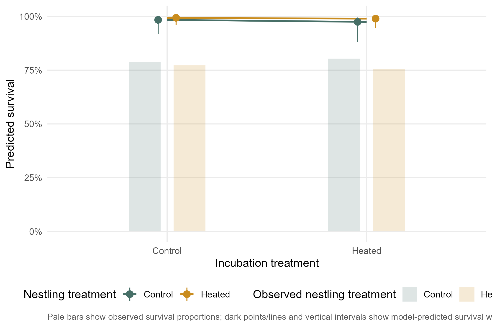
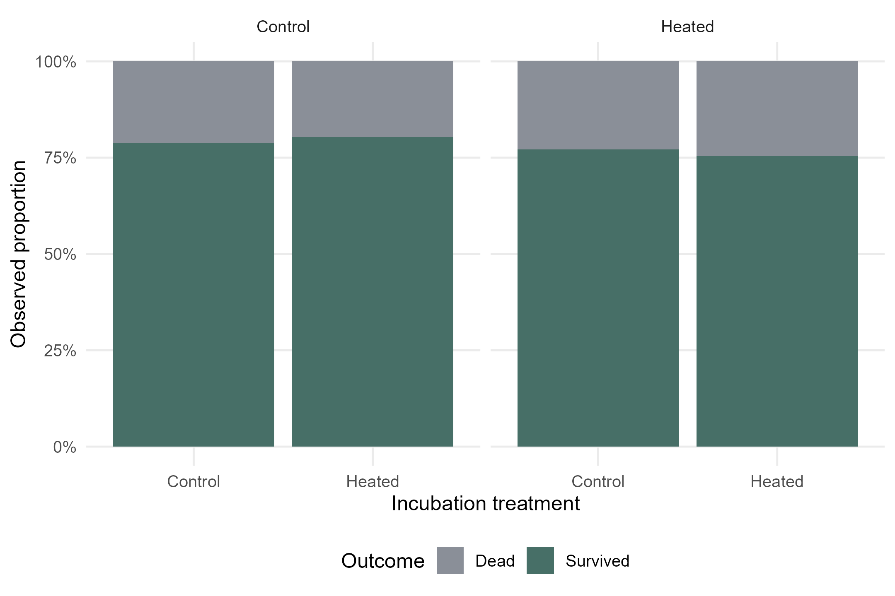

Results
This chapter presents the fitted models response by response. For each dependent variable, the page shows what is being tested, the primary model, the saved model summary, and the corresponding figures.
Response-level results
Day-2 body mass
Dependent variable
D2_MASS: Does incubation treatment and measured incubation-period temperature explain body mass at day 2?
Model
Primary model: gaussian_mean
Formula: D2_MASS ~ EXP.INC + incubation_temperature_sc + SEX + BS_sc + (1 | F_RING) + (1 | YEAR)
Sample size: 858
Dispersion formula: ~1
Fixed-effect estimates
| Term | Estimate | SE | z | p |
|---|---|---|---|---|
| (Intercept) | 3.189 | 0.067 | 47.798 | 0.0000 |
| EXP.INCHeated | -0.010 | 0.080 | -0.121 | 0.9036 |
| incubation_temperature_sc | 0.147 | 0.049 | 2.991 | 0.0028 |
| SEXM | -0.023 | 0.040 | -0.579 | 0.5623 |
| BS_sc | 0.073 | 0.039 | 1.846 | 0.0649 |
Saved model summary
Summary PDF: summary_D2_MASS_gaussian_mean.pdf
Diagnostic PDF: diagnostic_D2_MASS_gaussian_mean.pdf
Show saved model summary
Family: gaussian ( identity )
Formula:
D2_MASS ~ EXP.INC + incubation_temperature_sc + SEX + BS_sc +
(1 | F_RING) + (1 | YEAR)
Data: model_data
AIC BIC logLik -2*log(L) df.resid
1628.1 1666.1 -806.1 1612.1 850
Random effects:
Conditional model:
Groups Name Variance Std.Dev.
F_RING (Intercept) 0.201171 0.44852
YEAR (Intercept) 0.002827 0.05316
Residual 0.286199 0.53498
Number of obs: 858, groups: F_RING, 165; YEAR, 4
Dispersion estimate for gaussian family (sigma^2): 0.286
Conditional model:
Estimate Std. Error z value Pr(>|z|)
(Intercept) 3.188934 0.066717 47.80 < 2e-16 ***
EXP.INCHeated -0.009709 0.080146 -0.12 0.90358
incubation_temperature_sc 0.147440 0.049292 2.99 0.00278 **
SEXM -0.023082 0.039841 -0.58 0.56235
BS_sc 0.072712 0.039383 1.85 0.06485 .
---
Signif. codes: 0 '***' 0.001 '**' 0.01 '*' 0.05 '.' 0.1 ' ' 1Model prediction figure
This plot uses model predictions as the main signal. Dark points and lines show fitted means from the primary mixed model, vertical intervals are 95% confidence intervals, and pale jittered points in the background show the original observations.

Raw-data distribution
This raw-data plot shows the response distribution within treatment groups. The box centre line is the median, the box spans the interquartile range (25th-75th percentiles), whiskers show the boxplot range, and points are individual nestling observations.

Day-8 body mass
Dependent variable
D8_MASS: Does treatment during incubation and the nestling period, together with measured temperatures, explain body mass at day 8?
Model
Primary model: gaussian_mean
Formula: D8_MASS ~ EXP.INC + incubation_temperature_sc + EXP.NEST + nestling_temperature_sc + SEX + BS_sc + (1 | F_RING) + (1 | YEAR)
Sample size: 775
Dispersion formula: ~1
Fixed-effect estimates
| Term | Estimate | SE | z | p |
|---|---|---|---|---|
| (Intercept) | 12.536 | 0.275 | 45.644 | 0.0000 |
| EXP.INCHeated | -0.506 | 0.246 | -2.060 | 0.0394 |
| incubation_temperature_sc | -0.273 | 0.239 | -1.142 | 0.2535 |
| EXP.NESTHeated | 0.038 | 0.245 | 0.155 | 0.8772 |
| nestling_temperature_sc | -0.122 | 0.291 | -0.420 | 0.6743 |
| SEXM | 0.073 | 0.087 | 0.847 | 0.3970 |
| BS_sc | -0.042 | 0.119 | -0.348 | 0.7277 |
Saved model summary
Summary PDF: summary_D8_MASS_gaussian_mean.pdf
Diagnostic PDF: diagnostic_D8_MASS_gaussian_mean.pdf
Show saved model summary
Family: gaussian ( identity )
Formula:
D8_MASS ~ EXP.INC + incubation_temperature_sc + EXP.NEST + nestling_temperature_sc +
SEX + BS_sc + (1 | F_RING) + (1 | YEAR)
Data: model_data
AIC BIC logLik -2*log(L) df.resid
2566.5 2612.7 -1273.3 2546.5 736
Random effects:
Conditional model:
Groups Name Variance Std.Dev.
F_RING (Intercept) 1.9413 1.3933
YEAR (Intercept) 0.1073 0.3276
Residual 1.1401 1.0678
Number of obs: 746, groups: F_RING, 148; YEAR, 4
Dispersion estimate for gaussian family (sigma^2): 1.14
Conditional model:
Estimate Std. Error z value Pr(>|z|)
(Intercept) 12.53558 0.27464 45.64 <2e-16 ***
EXP.INCHeated -0.50606 0.24562 -2.06 0.0394 *
incubation_temperature_sc -0.27273 0.23881 -1.14 0.2535
EXP.NESTHeated 0.03784 0.24494 0.15 0.8772
nestling_temperature_sc -0.12248 0.29144 -0.42 0.6743
SEXM 0.07338 0.08664 0.85 0.3970
BS_sc -0.04152 0.11926 -0.35 0.7277
---
Signif. codes: 0 '***' 0.001 '**' 0.01 '*' 0.05 '.' 0.1 ' ' 1Model prediction figure
This plot uses model predictions as the main signal. Dark points and lines show fitted means from the primary mixed model, vertical intervals are 95% confidence intervals, and pale jittered points in the background show the original observations.

Raw-data distribution
This raw-data plot shows the response distribution within treatment groups. The box centre line is the median, the box spans the interquartile range (25th-75th percentiles), whiskers show the boxplot range, and points are individual nestling observations.

Day-12 body mass
Dependent variable
D12_MASS: Does treatment during incubation and the nestling period, together with measured temperatures, explain body mass at day 12?
Model
Primary model: gaussian_mean
Formula: D12_MASS ~ EXP.INC + incubation_temperature_sc + EXP.NEST + nestling_temperature_sc + SEX + BS_sc + (1 | F_RING) + (1 | YEAR)
Sample size: 687
Dispersion formula: ~1
Fixed-effect estimates
| Term | Estimate | SE | z | p |
|---|---|---|---|---|
| (Intercept) | 13.886 | 0.201 | 68.947 | 0.0000 |
| EXP.INCHeated | -0.237 | 0.224 | -1.060 | 0.2890 |
| incubation_temperature_sc | -0.248 | 0.123 | -2.007 | 0.0448 |
| EXP.NESTHeated | 0.076 | 0.224 | 0.339 | 0.7345 |
| nestling_temperature_sc | -0.201 | 0.118 | -1.709 | 0.0874 |
| SEXM | 0.143 | 0.073 | 1.959 | 0.0501 |
| BS_sc | -0.003 | 0.107 | -0.027 | 0.9787 |
Saved model summary
Summary PDF: summary_D12_MASS_gaussian_mean.pdf
Diagnostic PDF: diagnostic_D12_MASS_gaussian_mean.pdf
Show saved model summary
Family: gaussian ( identity )
Formula:
D12_MASS ~ EXP.INC + incubation_temperature_sc + EXP.NEST + nestling_temperature_sc +
SEX + BS_sc + (1 | F_RING) + (1 | YEAR)
Data: model_data
AIC BIC logLik -2*log(L) df.resid
2088.4 2133.7 -1034.2 2068.4 677
Random effects:
Conditional model:
Groups Name Variance Std.Dev.
F_RING (Intercept) 1.616e+00 1.2711126
YEAR (Intercept) 3.445e-09 0.0000587
Residual 7.190e-01 0.8479289
Number of obs: 687, groups: F_RING, 144; YEAR, 4
Dispersion estimate for gaussian family (sigma^2): 0.719
Conditional model:
Estimate Std. Error z value Pr(>|z|)
(Intercept) 13.886153 0.201405 68.95 <2e-16 ***
EXP.INCHeated -0.237465 0.223938 -1.06 0.2890
incubation_temperature_sc -0.247710 0.123441 -2.01 0.0448 *
EXP.NESTHeated 0.075852 0.223669 0.34 0.7345
nestling_temperature_sc -0.201217 0.117714 -1.71 0.0874 .
SEXM 0.143063 0.073013 1.96 0.0501 .
BS_sc -0.002844 0.106741 -0.03 0.9787
---
Signif. codes: 0 '***' 0.001 '**' 0.01 '*' 0.05 '.' 0.1 ' ' 1Model prediction figure
This plot uses model predictions as the main signal. Dark points and lines show fitted means from the primary mixed model, vertical intervals are 95% confidence intervals, and pale jittered points in the background show the original observations.

Raw-data distribution
This raw-data plot shows the response distribution within treatment groups. The box centre line is the median, the box spans the interquartile range (25th-75th percentiles), whiskers show the boxplot range, and points are individual nestling observations.

Early growth
Dependent variable
Early.g: Does treatment and measured temperature explain early nestling growth?
Model
Primary model: gaussian_mean
Formula: Early.g ~ EXP.INC + incubation_temperature_sc + EXP.NEST + nestling_temperature_sc + SEX + BS_sc + (1 | F_RING) + (1 | YEAR)
Sample size: 757
Dispersion formula: ~1
Fixed-effect estimates
| Term | Estimate | SE | z | p |
|---|---|---|---|---|
| (Intercept) | 1.562 | 0.035 | 45.034 | 0.0000 |
| EXP.INCHeated | -0.101 | 0.039 | -2.579 | 0.0099 |
| incubation_temperature_sc | -0.066 | 0.020 | -3.230 | 0.0012 |
| EXP.NESTHeated | -0.008 | 0.039 | -0.207 | 0.8361 |
| nestling_temperature_sc | -0.031 | 0.019 | -1.677 | 0.0935 |
| SEXM | 0.029 | 0.010 | 2.808 | 0.0050 |
| BS_sc | -0.013 | 0.018 | -0.690 | 0.4899 |
Saved model summary
Summary PDF: summary_Early.g_gaussian_mean.pdf
Diagnostic PDF: diagnostic_Early.g_gaussian_mean.pdf
Show saved model summary
Family: gaussian ( identity )
Formula:
Early.g ~ EXP.INC + incubation_temperature_sc + EXP.NEST + nestling_temperature_sc +
SEX + BS_sc + (1 | F_RING) + (1 | YEAR)
Data: model_data
AIC BIC logLik -2*log(L) df.resid
-541.6 -495.7 280.8 -561.6 718
Random effects:
Conditional model:
Groups Name Variance Std.Dev.
F_RING (Intercept) 5.129e-02 2.265e-01
YEAR (Intercept) 5.560e-10 2.358e-05
Residual 1.546e-02 1.243e-01
Number of obs: 728, groups: F_RING, 145; YEAR, 4
Dispersion estimate for gaussian family (sigma^2): 0.0155
Conditional model:
Estimate Std. Error z value Pr(>|z|)
(Intercept) 1.562169 0.034689 45.03 < 2e-16 ***
EXP.INCHeated -0.100725 0.039062 -2.58 0.00992 **
incubation_temperature_sc -0.065994 0.020430 -3.23 0.00124 **
EXP.NESTHeated -0.008066 0.038994 -0.21 0.83612
nestling_temperature_sc -0.031328 0.018680 -1.68 0.09353 .
SEXM 0.028867 0.010281 2.81 0.00499 **
BS_sc -0.012713 0.018412 -0.69 0.48989
---
Signif. codes: 0 '***' 0.001 '**' 0.01 '*' 0.05 '.' 0.1 ' ' 1Model prediction figure
This plot uses model predictions as the main signal. Dark points and lines show fitted means from the primary mixed model, vertical intervals are 95% confidence intervals, and pale jittered points in the background show the original observations.

Raw-data distribution
This raw-data plot shows the response distribution within treatment groups. The box centre line is the median, the box spans the interquartile range (25th-75th percentiles), whiskers show the boxplot range, and points are individual nestling observations.

Late growth
Dependent variable
Late.g: Does treatment and measured temperature explain late nestling growth?
Model
Primary model: gaussian_mean
Formula: Late.g ~ EXP.INC + incubation_temperature_sc + EXP.NEST + nestling_temperature_sc + SEX + BS_sc + (1 | F_RING) + (1 | YEAR)
Sample size: 677
Dispersion formula: ~1
Fixed-effect estimates
| Term | Estimate | SE | z | p |
|---|---|---|---|---|
| (Intercept) | 0.271 | 0.074 | 3.648 | 0.0003 |
| EXP.INCHeated | 0.036 | 0.047 | 0.757 | 0.4491 |
| incubation_temperature_sc | -0.135 | 0.065 | -2.079 | 0.0376 |
| EXP.NESTHeated | 0.025 | 0.047 | 0.540 | 0.5890 |
| nestling_temperature_sc | -0.044 | 0.073 | -0.600 | 0.5484 |
| SEXM | 0.013 | 0.018 | 0.742 | 0.4581 |
| BS_sc | -0.011 | 0.023 | -0.460 | 0.6456 |
Saved model summary
Summary PDF: summary_Late.g_gaussian_mean.pdf
Diagnostic PDF: diagnostic_Late.g_gaussian_mean.pdf
Show saved model summary
Family: gaussian ( identity )
Formula:
Late.g ~ EXP.INC + incubation_temperature_sc + EXP.NEST + nestling_temperature_sc +
SEX + BS_sc + (1 | F_RING) + (1 | YEAR)
Data: model_data
AIC BIC logLik -2*log(L) df.resid
116.7 161.9 -48.4 96.7 667
Random effects:
Conditional model:
Groups Name Variance Std.Dev.
F_RING (Intercept) 0.06710 0.2590
YEAR (Intercept) 0.01449 0.1204
Residual 0.04330 0.2081
Number of obs: 677, groups: F_RING, 141; YEAR, 4
Dispersion estimate for gaussian family (sigma^2): 0.0433
Conditional model:
Estimate Std. Error z value Pr(>|z|)
(Intercept) 0.27064 0.07419 3.648 0.000264 ***
EXP.INCHeated 0.03592 0.04746 0.757 0.449095
incubation_temperature_sc -0.13460 0.06475 -2.079 0.037636 *
EXP.NESTHeated 0.02544 0.04710 0.540 0.589033
nestling_temperature_sc -0.04396 0.07324 -0.600 0.548402
SEXM 0.01329 0.01791 0.742 0.458054
BS_sc -0.01067 0.02319 -0.460 0.645646
---
Signif. codes: 0 '***' 0.001 '**' 0.01 '*' 0.05 '.' 0.1 ' ' 1Model prediction figure
This plot uses model predictions as the main signal. Dark points and lines show fitted means from the primary mixed model, vertical intervals are 95% confidence intervals, and pale jittered points in the background show the original observations.

Raw-data distribution
This raw-data plot shows the response distribution within treatment groups. The box centre line is the median, the box spans the interquartile range (25th-75th percentiles), whiskers show the boxplot range, and points are individual nestling observations.

Whole-period growth
Dependent variable
Growth: Does treatment and measured temperature explain whole-period growth?
Model
Primary model: gaussian_mean
Formula: Growth ~ EXP.INC + incubation_temperature_sc + EXP.NEST + nestling_temperature_sc + SEX + BS_sc + (1 | F_RING) + (1 | YEAR)
Sample size: 664
Dispersion formula: ~1
Fixed-effect estimates
| Term | Estimate | SE | z | p |
|---|---|---|---|---|
| (Intercept) | 1.065 | 0.022 | 48.725 | 0.0000 |
| EXP.INCHeated | -0.027 | 0.024 | -1.112 | 0.2660 |
| incubation_temperature_sc | -0.049 | 0.013 | -3.698 | 0.0002 |
| EXP.NESTHeated | -0.005 | 0.024 | -0.220 | 0.8257 |
| nestling_temperature_sc | -0.011 | 0.013 | -0.909 | 0.3632 |
| SEXM | 0.019 | 0.007 | 2.508 | 0.0121 |
| BS_sc | -0.006 | 0.011 | -0.512 | 0.6086 |
Saved model summary
Summary PDF: summary_Growth_gaussian_mean.pdf
Diagnostic PDF: diagnostic_Growth_gaussian_mean.pdf
Show saved model summary
Family: gaussian ( identity )
Formula:
Growth ~ EXP.INC + incubation_temperature_sc + EXP.NEST + nestling_temperature_sc +
SEX + BS_sc + (1 | F_RING) + (1 | YEAR)
Data: model_data
AIC BIC logLik -2*log(L) df.resid
-1021.7 -976.7 520.9 -1041.7 654
Random effects:
Conditional model:
Groups Name Variance Std.Dev.
F_RING (Intercept) 1.850e-02 1.360e-01
YEAR (Intercept) 1.942e-11 4.407e-06
Residual 7.180e-03 8.474e-02
Number of obs: 664, groups: F_RING, 140; YEAR, 4
Dispersion estimate for gaussian family (sigma^2): 0.00718
Conditional model:
Estimate Std. Error z value Pr(>|z|)
(Intercept) 1.065398 0.021865 48.73 < 2e-16 ***
EXP.INCHeated -0.026903 0.024185 -1.11 0.265979
incubation_temperature_sc -0.048618 0.013148 -3.70 0.000218 ***
EXP.NESTHeated -0.005314 0.024132 -0.22 0.825710
nestling_temperature_sc -0.011468 0.012613 -0.91 0.363223
SEXM 0.018657 0.007440 2.51 0.012148 *
BS_sc -0.005863 0.011450 -0.51 0.608584
---
Signif. codes: 0 '***' 0.001 '**' 0.01 '*' 0.05 '.' 0.1 ' ' 1Model prediction figure
This plot uses model predictions as the main signal. Dark points and lines show fitted means from the primary mixed model, vertical intervals are 95% confidence intervals, and pale jittered points in the background show the original observations.

Raw-data distribution
This raw-data plot shows the response distribution within treatment groups. The box centre line is the median, the box spans the interquartile range (25th-75th percentiles), whiskers show the boxplot range, and points are individual nestling observations.

Day-12 scaled mass index
Dependent variable
D12_SMI: Does treatment and measured temperature explain day-12 scaled mass index?
Model
Primary model: gaussian_mean
Formula: D12_SMI ~ EXP.INC + incubation_temperature_sc + EXP.NEST + nestling_temperature_sc + SEX + BS_sc + (1 | F_RING) + (1 | YEAR)
Sample size: 679
Dispersion formula: ~1
Fixed-effect estimates
| Term | Estimate | SE | z | p |
|---|---|---|---|---|
| (Intercept) | 13.783 | 0.213 | 64.618 | 0.0000 |
| EXP.INCHeated | 0.079 | 0.213 | 0.371 | 0.7109 |
| incubation_temperature_sc | 0.020 | 0.150 | 0.131 | 0.8961 |
| EXP.NESTHeated | 0.124 | 0.213 | 0.580 | 0.5619 |
| nestling_temperature_sc | 0.056 | 0.253 | 0.221 | 0.8248 |
| SEXM | 0.271 | 0.087 | 3.097 | 0.0020 |
| BS_sc | -0.179 | 0.104 | -1.717 | 0.0860 |
Saved model summary
Summary PDF: summary_D12_SMI_gaussian_mean.pdf
Diagnostic PDF: diagnostic_D12_SMI_gaussian_mean.pdf
Show saved model summary
Family: gaussian ( identity )
Formula:
D12_SMI ~ EXP.INC + incubation_temperature_sc + EXP.NEST + nestling_temperature_sc +
SEX + BS_sc + (1 | F_RING) + (1 | YEAR)
Data: model_data
AIC BIC logLik -2*log(L) df.resid
2245.3 2290.5 -1112.6 2225.3 669
Random effects:
Conditional model:
Groups Name Variance Std.Dev.
F_RING (Intercept) 1.3350 1.1554
YEAR (Intercept) 0.0334 0.1827
Residual 1.0375 1.0186
Number of obs: 679, groups: F_RING, 141; YEAR, 4
Dispersion estimate for gaussian family (sigma^2): 1.04
Conditional model:
Estimate Std. Error z value Pr(>|z|)
(Intercept) 13.78306 0.21330 64.62 < 2e-16 ***
EXP.INCHeated 0.07895 0.21301 0.37 0.71091
incubation_temperature_sc 0.01963 0.15033 0.13 0.89613
EXP.NESTHeated 0.12361 0.21311 0.58 0.56188
nestling_temperature_sc 0.05608 0.25328 0.22 0.82478
SEXM 0.27085 0.08746 3.10 0.00196 **
BS_sc -0.17916 0.10436 -1.72 0.08604 .
---
Signif. codes: 0 '***' 0.001 '**' 0.01 '*' 0.05 '.' 0.1 ' ' 1Model prediction figure
This plot uses model predictions as the main signal. Dark points and lines show fitted means from the primary mixed model, vertical intervals are 95% confidence intervals, and pale jittered points in the background show the original observations.

Raw-data distribution
This raw-data plot shows the response distribution within treatment groups. The box centre line is the median, the box spans the interquartile range (25th-75th percentiles), whiskers show the boxplot range, and points are individual nestling observations.

Day-12 tarsus length
Dependent variable
D12_RTARS: Does treatment and measured temperature explain day-12 tarsus length?
Model
Primary model: gaussian_mean
Formula: D12_RTARS ~ EXP.INC + incubation_temperature_sc + EXP.NEST + nestling_temperature_sc + SEX + BS_sc + (1 | F_RING) + (1 | YEAR)
Sample size: 680
Dispersion formula: ~1
Fixed-effect estimates
| Term | Estimate | SE | z | p |
|---|---|---|---|---|
| (Intercept) | 16.883 | 0.085 | 199.323 | 0.0000 |
| EXP.INCHeated | -0.155 | 0.094 | -1.650 | 0.0989 |
| incubation_temperature_sc | -0.136 | 0.052 | -2.628 | 0.0086 |
| EXP.NESTHeated | 0.042 | 0.094 | 0.449 | 0.6533 |
| nestling_temperature_sc | -0.181 | 0.050 | -3.619 | 0.0003 |
| SEXM | -0.049 | 0.037 | -1.326 | 0.1848 |
| BS_sc | 0.045 | 0.045 | 0.988 | 0.3232 |
Saved model summary
Summary PDF: summary_D12_RTARS_gaussian_mean.pdf
Diagnostic PDF: diagnostic_D12_RTARS_gaussian_mean.pdf
Show saved model summary
Family: gaussian ( identity )
Formula: D12_RTARS ~ EXP.INC + incubation_temperature_sc + EXP.NEST +
nestling_temperature_sc + SEX + BS_sc + (1 | F_RING) + (1 | YEAR)
Data: model_data
AIC BIC logLik -2*log(L) df.resid
1086.7 1131.9 -533.3 1066.7 670
Random effects:
Conditional model:
Groups Name Variance Std.Dev.
F_RING (Intercept) 2.668e-01 5.165e-01
YEAR (Intercept) 1.723e-09 4.151e-05
Residual 1.848e-01 4.298e-01
Number of obs: 680, groups: F_RING, 141; YEAR, 4
Dispersion estimate for gaussian family (sigma^2): 0.185
Conditional model:
Estimate Std. Error z value Pr(>|z|)
(Intercept) 16.88284 0.08470 199.32 < 2e-16 ***
EXP.INCHeated -0.15543 0.09419 -1.65 0.098925 .
incubation_temperature_sc -0.13623 0.05184 -2.63 0.008598 **
EXP.NESTHeated 0.04231 0.09417 0.45 0.653264
nestling_temperature_sc -0.18122 0.05007 -3.62 0.000295 ***
SEXM -0.04890 0.03687 -1.33 0.184757
BS_sc 0.04477 0.04532 0.99 0.323229
---
Signif. codes: 0 '***' 0.001 '**' 0.01 '*' 0.05 '.' 0.1 ' ' 1Model prediction figure
This plot uses model predictions as the main signal. Dark points and lines show fitted means from the primary mixed model, vertical intervals are 95% confidence intervals, and pale jittered points in the background show the original observations.

Raw-data distribution
This raw-data plot shows the response distribution within treatment groups. The box centre line is the median, the box spans the interquartile range (25th-75th percentiles), whiskers show the boxplot range, and points are individual nestling observations.

Day-12 survival
Dependent variable
D12_SURV: Does treatment and measured temperature explain survival to day 12?
Model
Primary model: binomial
Formula: D12_SURV ~ EXP.INC + EXP.NEST + incubation_temperature_sc + nestling_temperature_sc + SEX + BS_sc + (1 | F_RING) + (1 | YEAR)
Sample size: 883
Fixed-effect estimates
| Term | Estimate | SE | z | p |
|---|---|---|---|---|
| (Intercept) | 4.174 | 0.863 | 4.836 | 0.0000 |
| EXP.INCHeated | -0.464 | 0.785 | -0.591 | 0.5547 |
| EXP.NESTHeated | 0.911 | 0.788 | 1.156 | 0.2476 |
| incubation_temperature_sc | -2.651 | 0.514 | -5.156 | 0.0000 |
| nestling_temperature_sc | -0.395 | 0.401 | -0.985 | 0.3247 |
| SEXM | 0.091 | 0.322 | 0.282 | 0.7776 |
| BS_sc | 0.071 | 0.361 | 0.197 | 0.8436 |
Saved model summary
Summary PDF: summary_D12_SURV_binomial.pdf
Diagnostic PDF: diagnostic_D12_SURV_binomial.pdf
Show saved model summary
Family: binomial ( logit )
Formula:
D12_SURV ~ EXP.INC + EXP.NEST + incubation_temperature_sc + nestling_temperature_sc +
SEX + BS_sc + (1 | F_RING) + (1 | YEAR)
Data: surv_dat
AIC BIC logLik -2*log(L) df.resid
481.4 524.0 -231.7 463.4 831
Random effects:
Conditional model:
Groups Name Variance Std.Dev.
F_RING (Intercept) 1.541e+01 3.926e+00
YEAR (Intercept) 2.469e-09 4.969e-05
Number of obs: 840, groups: F_RING, 161; YEAR, 4
Conditional model:
Estimate Std. Error z value Pr(>|z|)
(Intercept) 4.17383 0.86308 4.836 1.32e-06 ***
EXP.INCHeated -0.46390 0.78523 -0.591 0.555
EXP.NESTHeated 0.91084 0.78775 1.156 0.248
incubation_temperature_sc -2.65064 0.51405 -5.156 2.52e-07 ***
nestling_temperature_sc -0.39513 0.40123 -0.985 0.325
SEXM 0.09102 0.32221 0.282 0.778
BS_sc 0.07122 0.36092 0.197 0.844
---
Signif. codes: 0 '***' 0.001 '**' 0.01 '*' 0.05 '.' 0.1 ' ' 1Model prediction figure
This plot uses model predictions as the main signal. Dark points and lines show predicted survival probability from the primary binomial mixed model, vertical intervals are 95% confidence intervals, and pale bars in the background show observed survival proportions.

Raw-data distribution
This raw-data plot shows observed survival proportions within each treatment combination. Bars are proportions of nestlings classified as dead or survived; no model-based uncertainty interval is shown.
